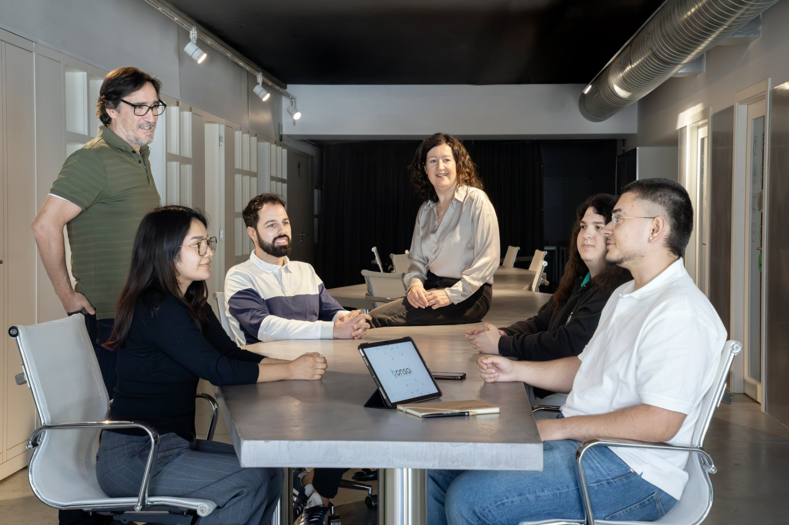

Diagnóstico de tu proceso de gestión de información
Encuentra las respuestas para que tu empresa funcione mejor.
Con el diagnóstico de Bonsai BI nos sentamos con tu equipo, vemos cómo se mueve la información en vuestro día a día y te damos una hoja de ruta con plazos y presupuesto.
Reservar una llamada→La primera llamada es gratuita.Sabes que algo no va como debería, pero con el día a día encima cuesta ver qué es.
La misma información se recoge varias veces, por distintas personas o en distintas fases del proceso, y cada tarea sigue su camino sin que nadie la mire de cerca. Te aportamos luz.
- Mapeamos cómo fluye tu información en las distintas actividades de tu proceso de trabajo.
- Detectamos dónde se escapa tiempo, margen o datos: duplicidades, tareas repetidas, información que se recoge dos veces.
- Revisamos cómo se toma el dato, para que el proceso sea más automático.
Cómo funciona
Empiezas con una llamada y decides en cada paso.
Llamada inicial
Confirmamos contigo si necesitas un diagnóstico o si ya tienes un problema concreto sobre el que trabajar.
Estudio preliminar
Hacemos un primer análisis de tu caso. De ahí sale el alcance y el presupuesto del diagnóstico.
Propuesta
Dimensionamos el diagnóstico, lo planificamos y lo presupuestamos. Tú decides si lo contratas.
Diagnóstico en profundidad
Nos metemos a estudiar a fondo cómo trabaja tu empresa. Te llevas una hoja de ruta con cambios priorizados, plazos y presupuesto.
Tú decides cómo sigues
Con la hoja de ruta en la mano, eliges cómo seguir: implantarla con nosotros o hacerlo por tu cuenta.
Preguntas frecuentes
¿Qué es el diagnóstico de Bonsai BI?+
Un estudio de cómo se recoge, se mueve y se usa la información en las actividades de tu trabajo. Forma parte de nuestras soluciones de business intelligence y termina en una hoja de ruta con plazos y presupuesto.
¿Tengo que pasar por el diagnóstico?+
Si ya sabes dónde está el problema, vamos directos a la solución. El diagnóstico de Bonsai BI tiene sentido cuando notas que algo falla y todavía no sabes dónde.
¿Qué parte es gratuita?+
La llamada inicial y el estudio preliminar. El diagnóstico en profundidad lo contratas cuando ya conoces su alcance y su presupuesto.
¿Cuánto tarda?+
Cada empresa lleva su ritmo. Influyen la complejidad de tus procesos, lo depurados y digitalizados que estén tus datos y cuánta gente participa. En la primera llamada te damos una estimación para tu caso.
¿Cuánto cuesta?+
Depende del alcance y de lo que salga del diagnóstico. Hemos hecho proyectos desde 1.500 € hasta 27.000 €. Cuéntanos tu situación y te presupuestamos lo que necesita.
¿Qué necesito tener a mano?+
Con saber qué herramientas utilizas, para qué empleas la información y cuántas personas la manejan, tenemos suficiente para empezar. Las preguntas las hacemos nosotros.

Primer paso
Cuéntanos qué te ocurre y vemos si necesitas un diagnóstico.
Hablemos sin compromiso.
Reservar una llamada→